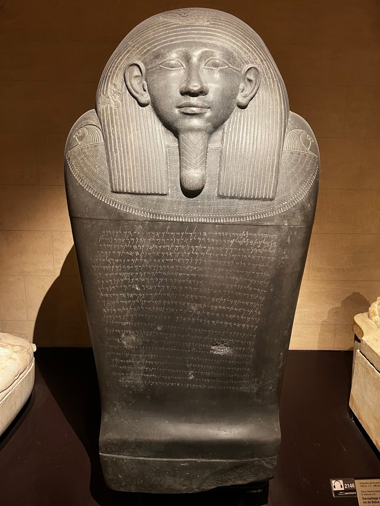

Eshmunazar II Sarcophagus

- Find Name
- Eshmunazar II Sarcophagus
- Description
- An Egyptian-made amphibolite sarcophagus (2.56 x 1.25 m) of Eshmunazar II, Phoenician king of Sidon (reigned about 539-525 BC, son of Tabnit), discovered in January 1855 at the Magharat Abloun (Cavern of Apollo) necropolis near Sidon. Its 22-line Phoenician inscription (KAI 14) is the first Phoenician-language inscription discovered in Phoenicia proper and the most detailed found up to that point. It is now in the Louvre (AO 4806).
- Historical Period
- Persian period; early 5th century BC
- Evidence Class
- Contextual
- Interpretations
- The inscription, in a Canaanite dialect mutually intelligible with Biblical Hebrew, records that the 'Lord of Kings' (the Persian king) granted the Sidonian kings Dor, Joppa, and the Plain of Sharon, coastal cities that appear in Joshua and Jonah. The sarcophagus was likely carved in Egypt from Wadi Hammamat stone and possibly captured as booty in Cambyses II's 525 BC conquest of Egypt. Sources differ on the discovery day (19 vs 20 January 1855), so only 'January 1855' is given.
- Alternative Names
- Sarcophagus of Eshmunazar II; Eshmunazor Sarcophagus
- Related Books
- Scripture Illuminated
- Biblical Significance
- It documents Persian-period Phoenician control of Dor and Joppa, two coastal cities named in Joshua and Jonah, in a language closely akin to Biblical Hebrew.
- Artifact Date
- early 5th century BC
- Current Location
- Louvre, Paris (AO 4806)
- Date Discovered
- January 1855
- Discovery Location
- Magharat Abloun necropolis, near Sidon, Lebanon
- Timeline Era
- Return and Second Temple
Awaiting Review Not yet checked against scholarly sources. Treat its claims as provisional until this entry is reviewed. About verification
Sources: https://en.wikipedia.org/wiki/Eshmunazar_II
https://cojs.org/sarcophagus_of_king_eshmunazar-_5th_century_bce/
https://cojs.org/sarcophagus_of_king_eshmunazar-_5th_century_bce/
Last reviewed: not yet reviewed